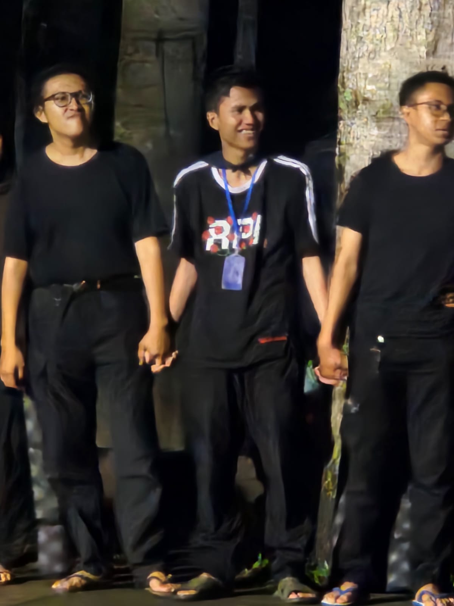
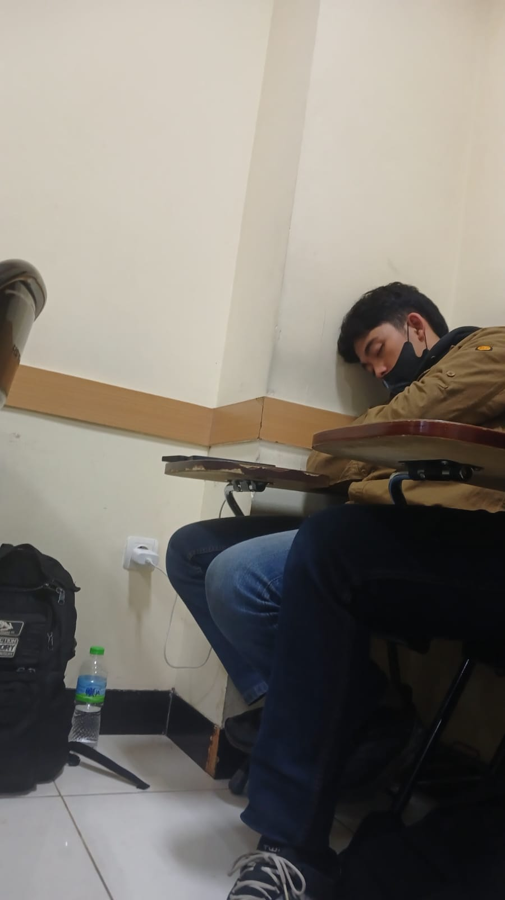

Informatika (Informatics)
/In. For. Ma. Ti. ka
Informatika adalah bidang ilmu yang mempelajari cara pengolahan, penyimpanan, dan pengelolaan informasi menggunakan teknologi komputer. Ini mencakup berbagai aspek seperti pemrograman, basis data, jaringan komputer, keamanan informasi, kecerdasan buatan, algoritma, dan interaksi manusia-komputer. Informatika bertujuan untuk mengembangkan teknologi dan sistem yang efisien untuk memproses dan mengelola data, serta mengoptimalkan penggunaan teknologi informasi dalam berbagai bidang kehidupan.
Informatika UNIBI 2023
Mahasiswa yang memasuki jurusan informatika sering kali datang tanpa pengetahuan mendalam tentang teknologi, namun dengan tekad kuat untuk menjadi profesional sukses di masa depan. Mereka membawa rasa ingin tahu dan semangat belajar tinggi. Melalui perkuliahan, diskusi, dan proyek kolaboratif, mereka belajar memecahkan masalah, menguasai bahasa pemrograman, dan memahami konsep-konsep teknologi yang kompleks. Mereka bekerja keras, beradaptasi dengan cepat terhadap perkembangan teknologi, dan saling mendukung dalam perjalanan akademis mereka. Tujuan mereka adalah menguasai ilmu informatika dan siap menghadapi tantangan di dunia teknologi yang terus berkembang.
Garis Waktu
Foto kelas perdana
Foto ini di ambil di 10/5/2023
Foto ini diambil oleh Itsar ketika kelas malam kita telah selesai. Dalam foto tersebut, terlihat suasana kelas yang baru saja usai dari aktivitas belajar mengajar di malam hari. Pencahayaan di ruangan berasal dari lampu-lampu di langit-langit, memberikan cahaya yang cukup untuk menerangi setiap sudut kelas. Meja dan kursi masih tersusun rapi, meskipun beberapa mungkin sudah ada yang sedikit berantakan setelah digunakan.
Wajah-wajah teman-teman sekelas yang terabadikan dalam foto ini bisa menunjukkan berbagai ekspresi, mulai dari kelegaan setelah berakhirnya jam pelajaran hingga rasa lelah setelah seharian beraktivitas. Ada yang mungkin sedang merapikan buku dan alat tulis, ada pula yang sedang bercengkerama sambil bersiap untuk pulang. Foto ini tidak hanya sekadar gambar, tetapi juga menyimpan kenangan dan cerita di balik momen tersebut, merekam suasana belajar di malam hari yang penuh dedikasi.
Foto di dalam kelas
Foto ini di ambil di 11/1/2023
Foto di dalam kelas matkul Kalkulus
Foto ini di ambil di 11/2/2023
Foto ini menunjukan betapa exictednya Ibnu, Itsar, Anando dan Kresa dalam menyelesaikan matakuliah Kalkulus
Di sini, kelas kita masih memiliki dua bunga yang mekar indah. Namun, pada akhirnya, hanya akan ada satu bunga yang tersisa. Ini adalah perjalanan yang penuh tantangan, di mana satu akan berkembang dan yang lain mungkin harus berjuang lebih keras. Kita semua menyaksikan bagaimana proses ini terjadi, menyadari bahwa meskipun hanya satu yang akan bertahan, keduanya telah memberikan warna dan keindahan dalam perjalanan kita bersama.

Foto setelah melakukan Ulangan Tengah Semester 1
Foto ini di ambil di 20/11/2023 dan 24/11/2023
Foto setelah melakukan Ulangan Akhir Semester 1
Foto ini di ambil di 2/2/2024
Foto 3 Pentolan IF 2023 Karyawan
Hanya dengan sebuah kamera, kita bisa membuat semua orang tergerak dari tempat duduknya, melihat dunia dengan cara yang baru dan penuh inspirasi.
Foto ini di ambil ketika alif membawa Kamera
Foto ini di ambil di 28/2/2024
Foto ini di ambil ketika melaksanakan kegiatan makrab FTI
Foto ini di ambil di 9/3/2024 dan 10/3/2024
Terlihat sangat jelas dalam foto di bawah ini bagaimana keterikatan IF 2023 Karyawan terjalin, menggenggam erat tangan teman di samping adalah salah satu bentuk ikatan batin yang sangat kuat.


Tidak ada mimpi yang terlalu besar untuk dikejar, dan tidak ada langkah yang terlalu kecil untuk memulai. Melanjutkan mimpi berarti berani melangkah meski jalan terasa berat, atau jika Anda terlalu lelah, tidur lagi dan bermimpi lebih besar!
Foto ini di ambil ketika seseorang sedang mengejar mimpi dan melanjutkan mimpi
Foto ini di ambil di 15/3/2024 dan 20/5/2024
❝Mungkin kita tidak sadar bahwa apa yang kita lakukan hari ini akan menjadi kenangan berharga di masa depan. Setiap langkah kecil, tawa, dan momen sederhana adalah benih yang akan tumbuh menjadi cerita indah dalam hidup kita nanti.❞
❝Setiap detik yang kita habiskan hari ini adalah lembaran dalam buku kenangan masa depan. Hargai setiap momen, karena suatu hari nanti, kita akan melihat kembali dan tersenyum pada kisah-kisah kecil yang pernah kita buat.❞
Nantikan foto-foto keseruan orang yang sedang mengejar mimpi mereka
Copyright©Moch Rizaldi Ananda Kurnia